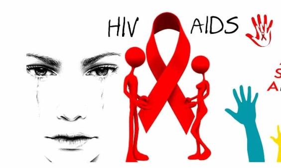

HIV is the virus, which attacks the T-cells (CD-4 cells) in the immune system. AIDS is the syndrome, which appears in the advanced stage of HIV infection. AIDS is a medical condition. HIV infection can cause AIDS to develop. However, it is possible to be infected with HIV without developing AIDS. Without treatment, the HIV infection can progress and, eventually, it will develop into AIDS in the vast majority of cases. Once someone has received an AIDS diagnosis, it will always carry over with them in their medical history.
What are the causes of HIV/AIDS?
HIV is a retrovirus that infects the vital organs and cells of the human immune system.
The virus progresses in the absence of antiretroviral therapy (ART) - a drug therapy that slows or prevents the growth of new HIV viruses.
The rate of virus progression varies between individuals and depends on many factors;
These factors include the age of the patient, the body's ability to defend against HIV, access to healthcare, existence of other infections, the infected person's genetic inheritance, resistance to certain strains of HIV, and more.
How is HIV transmitted?
Sexual transmission - It can happen when there is contact with infected sexual fluids (rectal, genital, or oral mucous membranes). This can happen while having unprotected sex, including vaginal, oral, and anal sex, or sharing sex toys with someone infected with HIV.
Perinatal transmission - A mother can pass the infection on to her child during childbirth, pregnancy, and also through breastfeeding.
Blood transmission - The risk of transmitting HIV through blood transfusion is nowadays extremely low in developed countries. However, among injection or IV drug users, sharing and reusing syringes contaminated with HIV-infected blood is extremely hazardous.
What are the symptoms AIDS?
What are the Precautions and treatments for AIDS?